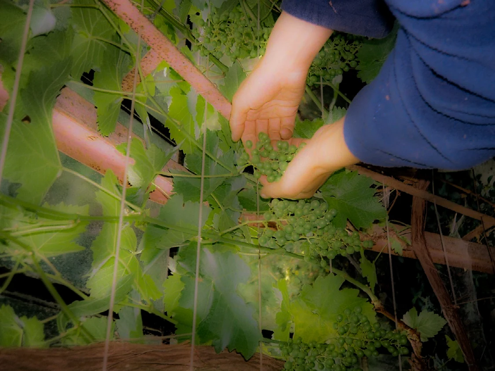
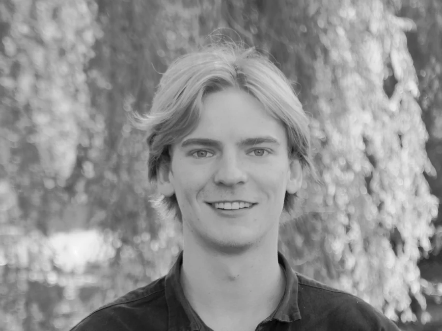
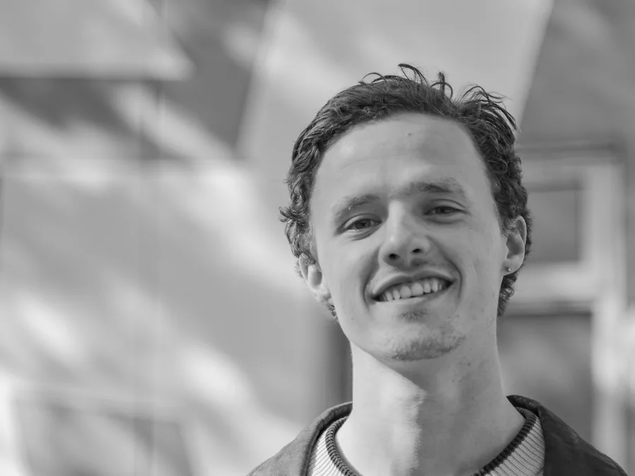

- Products
- Products and services that keep materials in use and fit the people, plants and places they are made for, from first sketch to tested prototype. Tides, Kangaroo Chair, Readme, Bako, Vertical Farming
- Spaces
- Exhibitions, pavilions and installations that turn research into a place to walk through, built with local makers and materials. Reharvest, Material Matters
- Research
- Field research, workshops, publications and observational film that trace how a sector really works and bring that knowledge to the growers, makers and researchers who shape it. Protein Transition, Material Matters, YIIYA
Studio
Kiem Studio is a design and research studio for circular and ecological impact, run by Merlijn Lewerissa in Rotterdam and Emile Waterkeyn in Brussels.

Every part of the system we live in is a decision that has hardened into habit. How we take, make, use and discard. Transitions begin when those decisions become visible again and therefore open to change. A circular world is not one that wastes less, it is one in which human making is understood as part of a larger living fabric, accountable to what it draws on and what it leaves behind. Design, for us, is a way of thinking within systems and imagining how they could be otherwise.
What we do
What we are working on
- Materials and residual streams
- Finding uses, partners and supply chains for materials that a sector still treats as waste.
- Repair and reuse
- Designing objects to be maintained, repaired and passed on, so their value outlasts their first owner.
- Design with nature
- Working with materials that grow and leaving room for the ecosystems around what we build.
We look for clients and partners ready to test something new.
Who we are
We met studying industrial design at TU Delft and have worked together since 2022.

Emile Waterkeyn
Brussels
Designer between systemic and speculative design, focused on the bio-economy. Emile did mycelium research at Spore, led innovation projects as Living Lab project manager at Stichting Innovatie Glastuinbouw Nederland and founded the textile printing company De Print Bar. He makes observational documentaries, including YIIYA and Carrying Steel, which follows the supply chain behind a fork.

Merlijn Lewerissa
Rotterdam
Product designer and maker, with an exchange term at ArtCenter College of Design in Pasadena. His graduation project Tides received funding from Sportinnovator and ZonMw to continue. He teaches furniture making at Buurman Rotterdam and designed passenger experiences at Royal Schiphol Group.
Clients and collaborators
- KLM
- Royal Schiphol Group
- Onkyo
- MX3D
- ZonMw
- Stichting Innovatie Glastuinbouw Nederland
- Greenport West-Holland
- NBD Biblion
- DOK Library Delft
- Design Without Borders
- Bayimba Foundation
- Logiqs
- Spore
- Sportinnovator
- 32° East
- SASA School of Industrial Design
- Network of Insect Knowledge
- Good, Thanks Surfboards
- Buurman Rotterdam
- Vera Connect
Contact
For commissions, collaborations and talks, write to one of us.